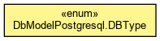

org.waarp.common.database.model
Enum DbModelPostgresql.DBType
java.lang.Object
 java.lang.Enum<DbModelPostgresql.DBType>
org.waarp.common.database.model.DbModelPostgresql.DBType
java.lang.Enum<DbModelPostgresql.DBType>
org.waarp.common.database.model.DbModelPostgresql.DBType
- All Implemented Interfaces:
- Serializable, Comparable<DbModelPostgresql.DBType>
- Enclosing class:
- DbModelPostgresql
protected static enum DbModelPostgresql.DBType
- extends Enum<DbModelPostgresql.DBType>

CHAR
public static final DbModelPostgresql.DBType CHAR
VARCHAR
public static final DbModelPostgresql.DBType VARCHAR
LONGVARCHAR
public static final DbModelPostgresql.DBType LONGVARCHAR
BIT
public static final DbModelPostgresql.DBType BIT
TINYINT
public static final DbModelPostgresql.DBType TINYINT
SMALLINT
public static final DbModelPostgresql.DBType SMALLINT
INTEGER
public static final DbModelPostgresql.DBType INTEGER
BIGINT
public static final DbModelPostgresql.DBType BIGINT
REAL
public static final DbModelPostgresql.DBType REAL
DOUBLE
public static final DbModelPostgresql.DBType DOUBLE
VARBINARY
public static final DbModelPostgresql.DBType VARBINARY
DATE
public static final DbModelPostgresql.DBType DATE
TIMESTAMP
public static final DbModelPostgresql.DBType TIMESTAMP
type
public int type
constructor
public String constructor
values
public static DbModelPostgresql.DBType[] values()
- Returns an array containing the constants of this enum type, in
the order they are declared. This method may be used to iterate
over the constants as follows:
for (DbModelPostgresql.DBType c : DbModelPostgresql.DBType.values())
System.out.println(c);
- Returns:
- an array containing the constants of this enum type, in
the order they are declared
valueOf
public static DbModelPostgresql.DBType valueOf(String name)
- Returns the enum constant of this type with the specified name.
The string must match exactly an identifier used to declare an
enum constant in this type. (Extraneous whitespace characters are
not permitted.)
- Parameters:
name - the name of the enum constant to be returned.
- Returns:
- the enum constant with the specified name
- Throws:
IllegalArgumentException - if this enum type has no constant
with the specified name
NullPointerException - if the argument is null
getType
public static String getType(int sqltype)
Copyright © 2009-2013 Waarp. All Rights Reserved.